|
|
|
Close Help | ||||||||||||||
|
|
|
Close Help | ||||||||||||||
| Róg w złym slocie, krawędz w poprawnym slocie (Corner in wrong slot, Edge in correct slot) | |||
| 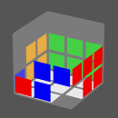 L' R U L U' R' |
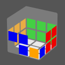 L' R U' R' U L |
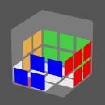 R U L' U' L R' |
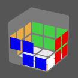 L' U' R U L R' |
| 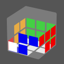 y' R' U R2 U2 R2 U R |
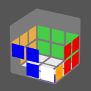 y' R U' R2 U2 R2 U' R' |
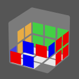 y' R U' F R F' R2 U' R |
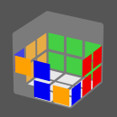 y L' U F' L' F L2 U L' |
| 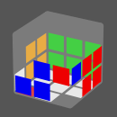 R' F R U' F' R U' R' |
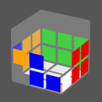 L F' L' U F L' U L L F L' F R L' U L R' |
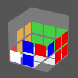 L F2 L' F U' F |
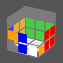 R' F2' R F' U F' |
| Róg w złym slocie, krawedz w warstwie U (Corner in wrong slot, Edge in the U layer) | |||
| 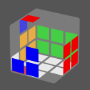 (L' U' L) (F' U' F) |
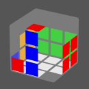 (F U2 F') U (F' U' F) |
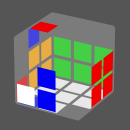 F U2 F2 U F |
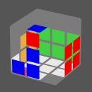 L' R U' L R' |
(L' U L) (R U' R') |
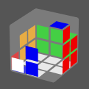 (F U2 F') U (R U R') |
||
| Krawędz w złym slocie, róg w poprawnym slocie (Edge in wrong slot, Corner in correct slot) | |||
| 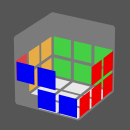 F r U2 r' F' (y) R2 U R2 U' R2 |
F' l' U2 l F (y) R2 U' R2 U R2 |
R U L' U2 L R' |
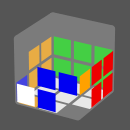 L' U' R U2 L R' |
| 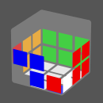 R U' L' U' L U' R' L' U R U2 L U' R' |
R U' L' U2 R' U L L' U R U R' U L |
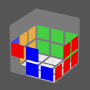 L u L' u' L' y' B R U' R' B' F (U r U' r') F' |
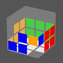 R' u' R u R y' F' R' U R F F r U r' U' F' |
| 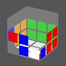 R U' R2 u' R' u R |
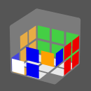 L' U L2 u L u' L' |
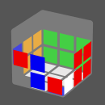 F U2 R' F' R2 U R' |
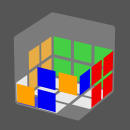 F' U2 L F L2 U' L y' R' U' R2 U' R' F' U' F |
| Krawędz w złym slocie, róg w warstwie U (Edge in wrong slot, Corner in the U layer) | |||
| 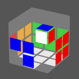 L F2 L' F2 |
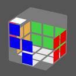 F2 R' F2 R |
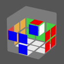 U' (L' U' L) (R U' R') |
L' F' U' F L |
| 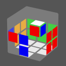 L F' L2 U L U2 F |
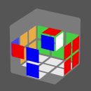 (F U2 F') (R U R') |
||
| Róg oraz krawędz w złym slocie (Both corner and edge in wrong slot) | |||
| 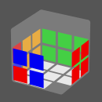 y' R U' R U2 R2 U2 R U R y' R U R U2 R2 U2 R U' R |
y' R' U R' U2 R2 U2 R' U' R' y' R' U' R' U2 R2 U2 R' U R' |
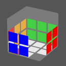 y' R U' R2 U' R U' R' U' R y' R U' R' U' R U' R2 U' R F' R2 U F' R2 F U' R2 |
y' R' U R2 U R' U R U R' y' R' U R U' R U' R' U' R U R' F L2 U' F L2 F' U L2 |
| 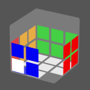 L' U L U R U' R' U' R U R' y' R U R' U' R U' R' U R' U' R y' R U R2 U2 R' U R' U' R2 |
R U' R' U' L' U L U L' U' L y' R' U' R U R' U R U' R U R' |
L F' L' F R U' R' |
R U R' F' L F L' |
| 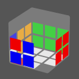 y' R U' R2 y R' F' R F F L F' L' y' R2 U' R L' U' M' U L U M F' F' R U' R' r U' M U R' F |
y' R' U R2 F R F' R' y' R' B' R2 U R' R U l' L U' R' U' M F F' R U' M' U M U R' F |
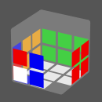 L' U' L y' R' U2 R U R' U' R |
R U R' y' R U2 R' U' R U R' |
| Niektóre przypadki po przekatnej (Some Diagonal Jeff2L) | |||
R' U R' u' R2 u R2 |
R2 F R U' F' R |
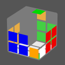 R2 L U' L' U R2 |
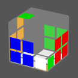 R2 U' L U L' R2 |
| Naprzeciwległe przypadki. Krawedz w BL (Diagonal Jeff2L. Edge in BL) | |||
| 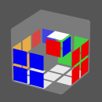 R2 u R2 u' R2 |
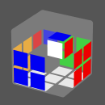 (U) (L U' L') (R U' R') |
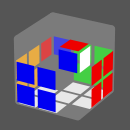 (U') (L U L') (R U R') |
L F' U' F L' |
| 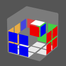 (U2) F' (L U' L') F |
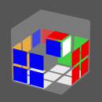 B' (R U R') B |
R2 B' R' U B R' |
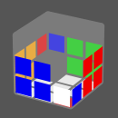 (F' U F') D' L2 D F2 |
R U2 B' U B R' |
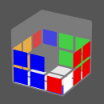 (L U L') R U2 (L U' L') R' RU'R u R2 u' R2 |
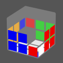 F' U2 (L U' L') F |
|
| Naprzeciwległe przypadki. Róg w BLD (Diagonal Jeff2L. Corner in BLD) | |||
| 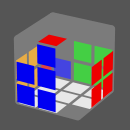 (U) (L U2 L') (F' U' F) |
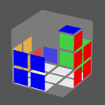 (U') (B' U2 B) (R U R') |
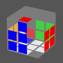 (U2') (L U L') (F' U F) |
(U) (L U2' L') (R U R') |
(L U' L') U2 (F' U' F) |
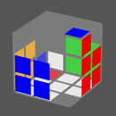 (U2) (L U' L') (R U2 R') |
D2 (R U R') D2 (R U' R') |
L (R U R' U') L' (F' U F) |
L R2 U' L' U R2 |
R2 U' (L U L') R2 |
(F' U F) R (B' U2 B) R' |
|
| Naprzeciwległe przypadki. Slot w BL (Diagonal Jeff2L. Both pieces in the wrong slot) | |||
L R U2 L' R' |
L U2 F U2 F2 U' F L' |
L2 R U2 L' U' L U' L2 R' |
B' U B F' U' F R U R' |
L U2 F U' F' L' R U R' |
L U' L' R U R' F' U' F |
||